← 返回阅读库 · 原论文目录
论文讲解阅读文档 · 论文精读 · v210
3秒复刻灵笼！CosyVoice三部曲深度解析
视频时长 00:10:49；讲解文字 3,981 字符；提取讲解画面 74 张。按视频原顺序阅读，每段文字保留时间戳。
文字来自整段视频的自动语音转写，按自然停顿分段，并与 PPT / 论文页面 / 演示画面对齐。未将讲解压缩为摘要；术语、数字和口述公式请结合画面及原论文核对。 阅读稿已校正规范部分明确术语误识别；原始逐字稿和每处修改记录另行保留。
讲解画面为源视频截图（640×360），不是可编辑 PPT 文件。全片按每秒 2 帧扫描内容变化，逐步展开页保留；连续动画保留代表画面。清晰度受源视频限制。
下载完整资料包 · 含离线 HTML、PDF、Word、全部 PPT 画面和字幕。
原论文与材料
CosyVoice: A Scalable Multilingual Zero-shot Text-to-speech Synthesizer based on Supervised Semantic Tokens · 下载完整 PDF（10 页）
CosyVoice 2: Scalable Streaming Speech Synthesis with Large Language Models · 下载完整 PDF（19 页）
CosyVoice 3: Towards In-the-wild Speech Generation via Scaling-up and Post-training · 下载完整 PDF（22 页）
演示音频备注
以下为整理备注，原音另附以便核对。
00:02:04–00:02:08 · 此处为语音/音效演示，未能可靠识别词句，原音另附。
按时间阅读
00:00:00–00:00:04 · 画面 001
00:00:00–00:00:04 · 画面 001马克 ，接下来就交给你了。
00:00:04–00:00:08 · 画面 002
00:00:04–00:00:08 · 画面 002我在梦里计算了无数次。
00:00:08–00:00:12 · 画面 003
00:00:08–00:00:12 · 画面 003这是唯一的机会无论面对何种困难和挑战，
00:00:12–00:00:16 · 画面 004
00:00:12–00:00:16 · 画面 004人类作为命运共同体，都应抛弃偏见 ，团结起来。
00:00:16–00:00:20 · 画面 005
00:00:16–00:00:20 · 画面 005在时间的长河中履历前行。
00:00:20–00:00:24 · 画面 006
00:00:20–00:00:24 · 画面 006我想要活着 ，真正地活着。2026 年 等我回来
00:00:24–00:00:28 · 画面 007
00:00:24–00:00:28 · 画面 007当 GPT 架构统治文本领域，
00:00:28–00:00:30 · 画面 008
00:00:28–00:00:30 · 画面 008当 OpenAI 的 Whisper 开启语音大模型时代，
00:00:30–00:00:33 · 画面 009
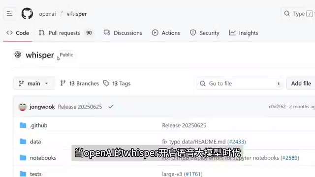
00:00:30–00:00:33 · 画面 009语音合成这个人机交互最直接的桥梁，
00:00:33–00:00:37 · 画面 010
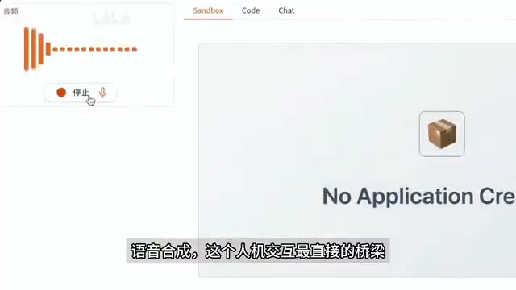
00:00:33–00:00:37 · 画面 010却常常卡在机械感和高延迟的泥潭里。然而 ，一片来自阿里团队的开源研究横空出世，
00:00:37–00:00:38 · 画面 011
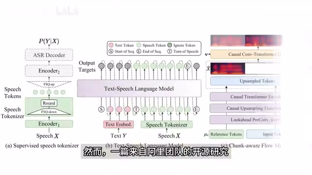
00:00:37–00:00:38 · 画面 01100:00:38–00:00:42 · 画面 012
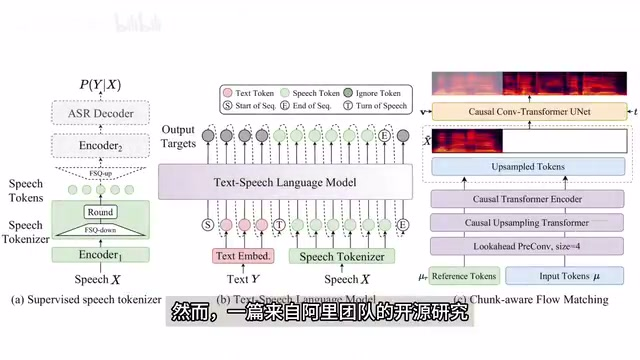
00:00:38–00:00:42 · 画面 012带来了 CosyVoice 这个网站模型。刚刚我们所听到的内容，
00:00:42–00:00:46 · 画面 013
00:00:42–00:00:46 · 画面 013就是由 CosyVoice 进行合成它能让语音合成的响应延迟大幅降低，
00:00:46–00:00:50 · 画面 014
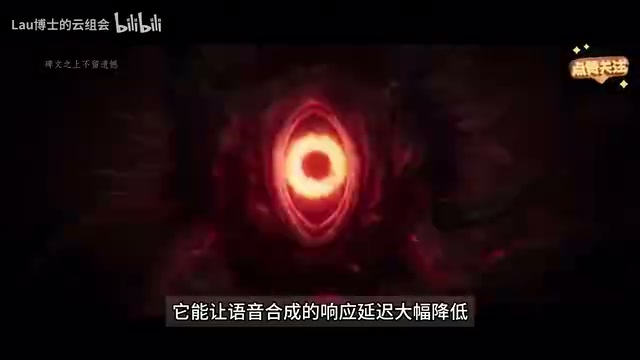
00:00:46–00:00:50 · 画面 014实现近乎实时的交互体验。
00:00:50–00:00:53 · 画面 015
00:00:50–00:00:53 · 画面 015克隆质量几乎无损。本期 ，带你深度剖析这篇前言论文，
00:00:53–00:00:58 · 画面 016
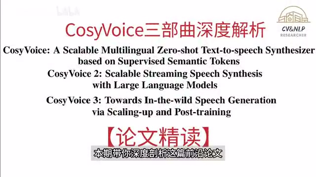
00:00:53–00:00:58 · 画面 016看 CosyVoice 系列如何在语音合成赛道一气绝尘。
00:00:58–00:01:02 · 画面 017
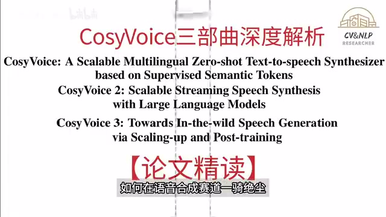
00:00:58–00:01:02 · 画面 017欢迎来到 Leo 博士的云组会，我们每周都将至少有一篇高质量的论文精读发布出来。
00:01:02–00:01:06 · 画面 018
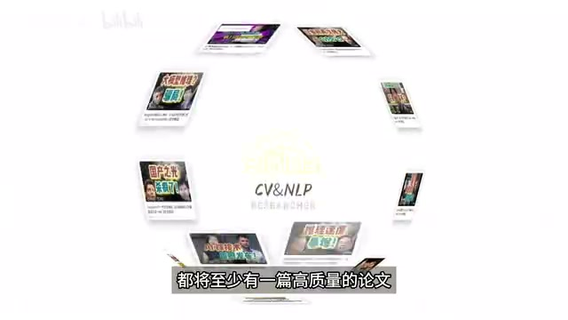
00:01:02–00:01:06 · 画面 018相信在一系列的论文学习以后，
00:01:06–00:01:10 · 画面 019
00:01:06–00:01:10 · 画面 019你就能成为人工智能领域的专家。
00:01:10–00:01:14 · 画面 020
00:01:10–00:01:14 · 画面 02000:01:14–00:01:18 · 画面 021
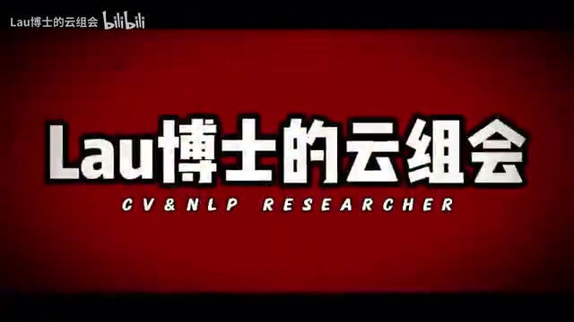
00:01:14–00:01:18 · 画面 021正片开始,大家有没有想过,为什么只用几秒钟的原始音频就能克隆出一集完整的对话呢?今天,我们就用 CosyVoice 为例,深入剖析语音克隆技术。接下来,我将用最直观的案例让你了解 CosyVoice 的核心原理。
00:01:18–00:01:33 · 画面 022
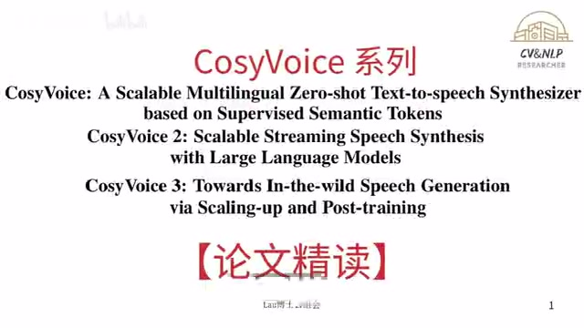
00:01:18–00:01:33 · 画面 02200:01:33–00:01:35 · 画面 023
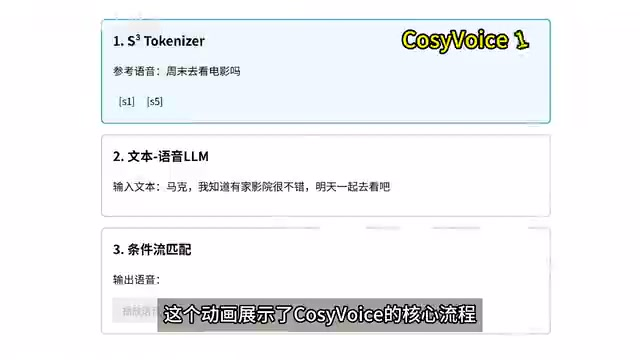
00:01:33–00:01:35 · 画面 023这个动画展示了 Cosy Voice 的核心流程。
00:01:35–00:01:41 · 画面 024
00:01:35–00:01:41 · 画面 024零样本语音克隆上侧模块从参考语音中提取代语音的 S3 Tokens，
00:01:41–00:01:45 · 画面 025
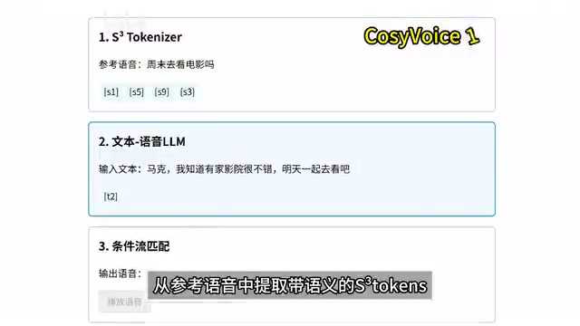
00:01:41–00:01:45 · 画面 025就像给语音内容贴标签，中间的 LLM 模块根据输入文本生成对应的 Tokens 序列，
00:01:45–00:01:48 · 画面 026
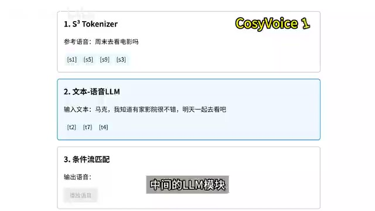
00:01:45–00:01:48 · 画面 026同时参考说话人的音色特征，
00:01:48–00:01:52 · 画面 027
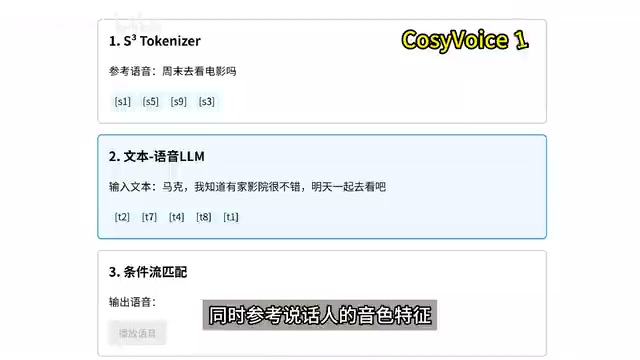
00:01:48–00:01:52 · 画面 027下侧条件流匹配模型将 Tokens 转换为可听语音。
00:01:52–00:02:05 · 画面 028
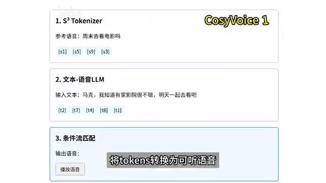
00:01:52–00:02:05 · 画面 028整个过程无需提前训练，仅用少量参考语音就能模仿说话人音色。这是 Cosy Voice 最关键的创新。接下来我们来播放语音。听一下效果
00:02:05–00:02:09 · 画面 029
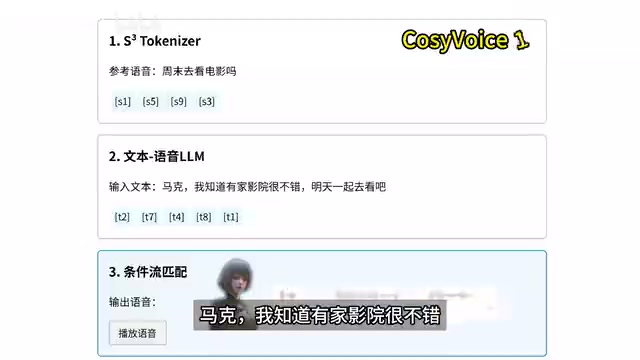
00:02:05–00:02:09 · 画面 029这个动画展示了 Cosy Voice 2 的核心改进。
00:02:09–00:02:10 · 画面 030
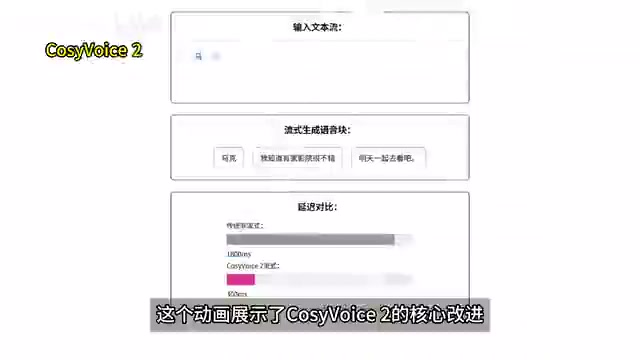
00:02:09–00:02:10 · 画面 03000:02:10–00:02:14 · 画面 031
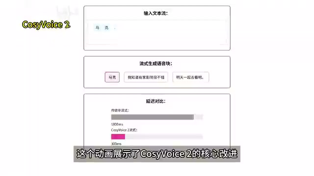
00:02:10–00:02:14 · 画面 031流式合成与 Cosy Voice 必须等待完整文本不同。
00:02:14–00:02:19 · 画面 032
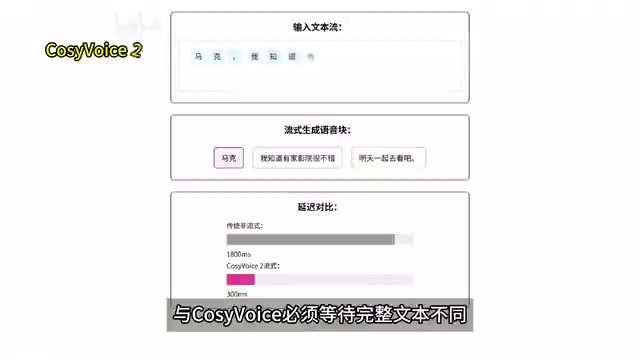
00:02:14–00:02:19 · 画面 032Cosy Voice 2 能边输入文本边生成语音。
00:02:19–00:02:21 · 画面 033
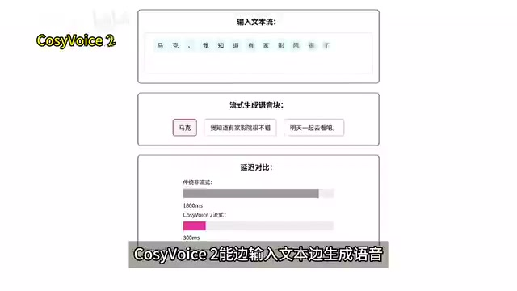
00:02:19–00:02:21 · 画面 033用户输入马克两个字后，
00:02:21–00:02:28 · 画面 034
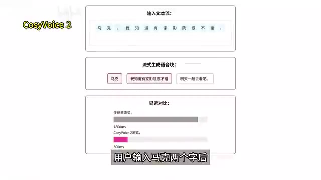
00:02:21–00:02:28 · 画面 034第一个语音块立即生成，无需等待完整句子。马克 我知道有家影院很不错。明天一起去看吧
00:02:28–00:02:40 · 画面 035
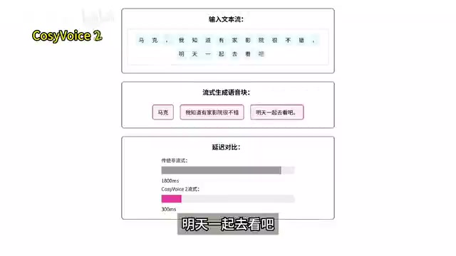
00:02:28–00:02:40 · 画面 035延迟对比显示启响音速度从 1800 毫秒降至 300 毫秒适合实时交互场景。这种边输入边朗读的能力是如何实现的？接下来我们解析它的架构创新。这个动画展示了 Cosy Voice 3 的核心能力。
00:02:40–00:02:41 · 画面 036
00:02:40–00:02:41 · 画面 03600:02:41–00:02:42 · 画面 037
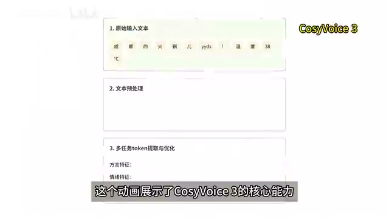
00:02:41–00:02:42 · 画面 03700:02:42–00:02:49 · 画面 038
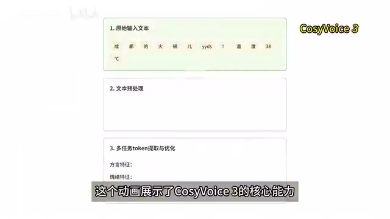
00:02:42–00:02:49 · 画面 038处理真实场景的复杂文本，面对成都的火锅 YYDS温度 38 摄氏度这样包含方言，
00:02:49–00:02:51 · 画面 039
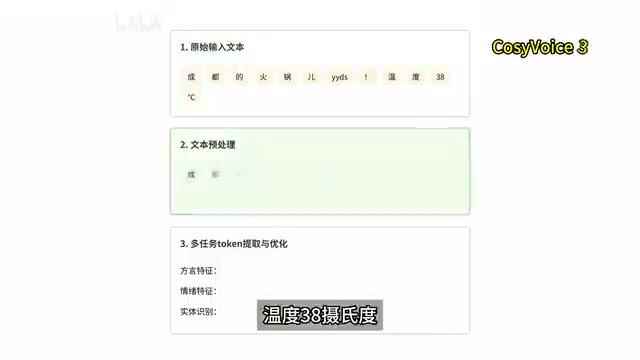
00:02:49–00:02:51 · 画面 039网络热词和特殊符号的文本，
00:02:51–00:02:52 · 画面 040
00:02:51–00:02:52 · 画面 04000:02:52–00:02:56 · 画面 041
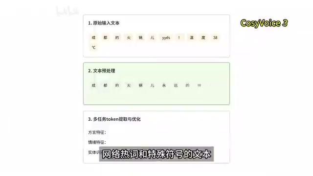
00:02:52–00:02:56 · 画面 041它能通过发音修复将 YYDS 转为永远的神，通过文本归一化将数字的 38 摄氏度，
00:02:56–00:03:02 · 画面 042
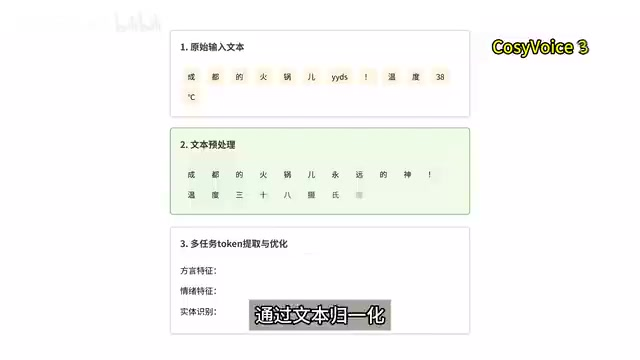
00:02:56–00:03:02 · 画面 042转为中文文本的 38 摄氏度，还能提取四川话、儿化音和兴奋等风格特征
00:03:02–00:03:05 · 画面 043
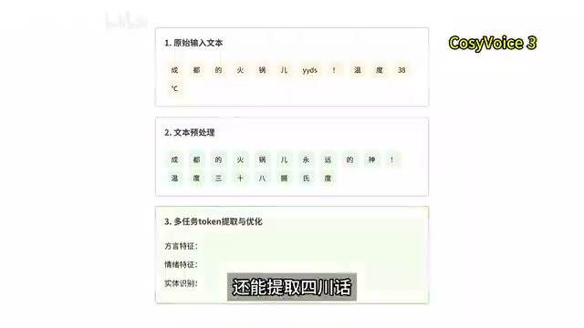
00:03:02–00:03:05 · 画面 043最后通过 DiffRO 优化确保语音清晰。
00:03:05–00:03:13 · 画面 044
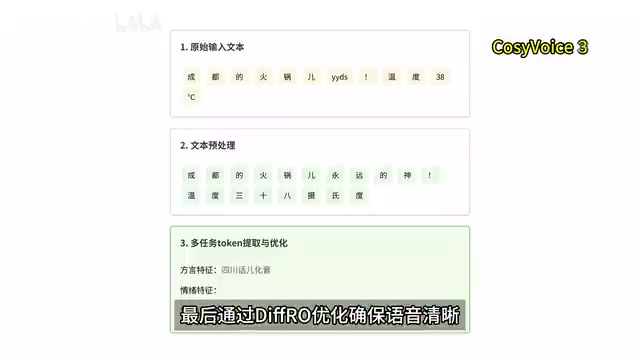
00:03:05–00:03:13 · 画面 044这种接地气的能力是前两代模型不具备的。稍后我们详细解析它的技术突破。说到这里
00:03:13–00:03:21 · 画面 045
00:03:13–00:03:21 · 画面 045再给不熟悉我们的同学介绍一下本频道。雷欧博士的云组会致力于打造一站式人工智能交流平台。用尽可能好理解的语言，
00:03:21–00:03:22 · 画面 046
00:03:21–00:03:22 · 画面 046让每位同学都能了解 AI 最前沿的内容。
00:03:22–00:03:29 · 画面 047
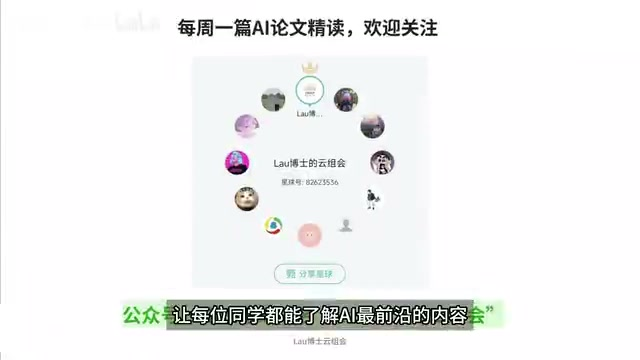
00:03:22–00:03:29 · 画面 047除了视频外也欢迎同学加入云组会的知识星球。我们做了三件事一、系统性拆解热门领域的学习路线
00:03:29–00:03:30 · 画面 048
00:03:29–00:03:30 · 画面 04800:03:30–00:03:34 · 画面 049
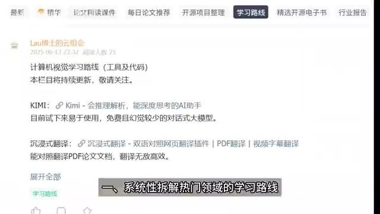
00:03:30–00:03:34 · 画面 049帮你避开无效努力。二、每日更新精选文献解读
00:03:34–00:03:36 · 画面 050
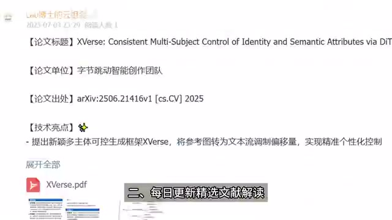
00:03:34–00:03:36 · 画面 050省去 80%的检索时间
00:03:36–00:03:39 · 画面 051
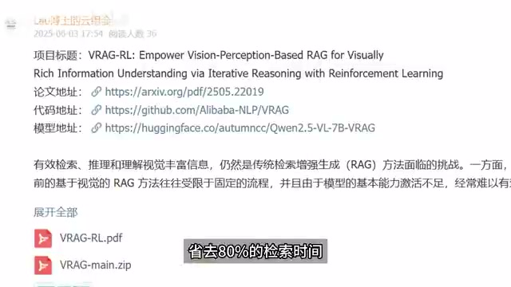
00:03:36–00:03:39 · 画面 051三、建立专家学者交流群不定期掉落福利
00:03:39–00:03:42 · 画面 052
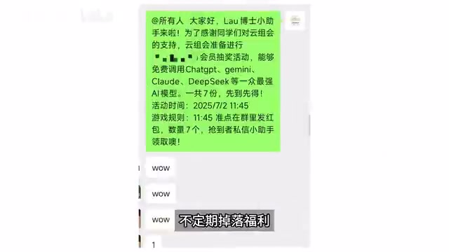
00:03:39–00:03:42 · 画面 052直接与专家学者互动交流。深度参与选题
00:03:42–00:03:44 · 画面 053
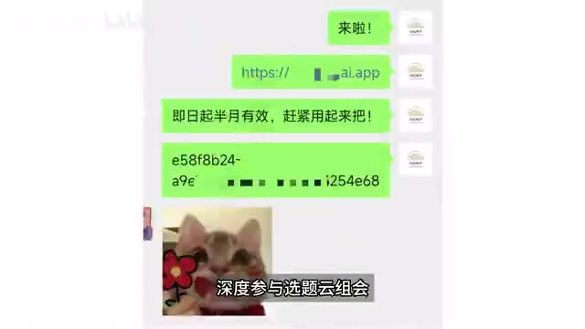
00:03:42–00:03:44 · 画面 053云组会欢迎各位同学的加入。
00:03:44–00:03:45 · 画面 054
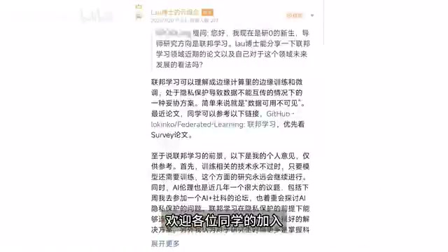
00:03:44–00:03:45 · 画面 05400:03:45–00:03:47 · 画面 055
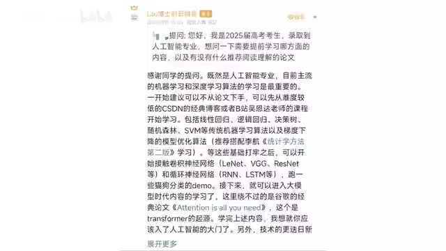
00:03:45–00:03:47 · 画面 055看完刚才的动画
00:03:47–00:04:14 · 画面 056
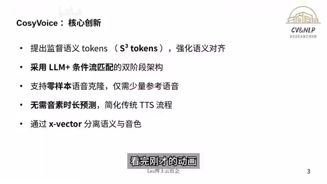
00:03:47–00:04:14 · 画面 056我们来深入解析 Cosy Voice 的核心创新。在引言部分作者指出传统 LM-based TTS使用无监督语音 tokens存在语义模糊和文本，对其差的问题例如合成苹果很甜食。无监督 tokens 可能混淆苹果的语义导致发音错误Cosy Voice 的核心 idea 是从语音识别模型中提取监督语义 tokens,S3 tokens,如图 1a 所示,通过在 ASR 模型编码器中插入向量量化层,让 tokens 直接关联文本语义。这种 tokens 就像带字幕的语音片段,每个 token 都对应明确的文字含义,解决了语义模糊问题。在 2.2 节中,作者介绍 LLM 如何以文本为条件生成 tokens 序列图 EBBB,
00:04:14–00:05:02 · 画面 057
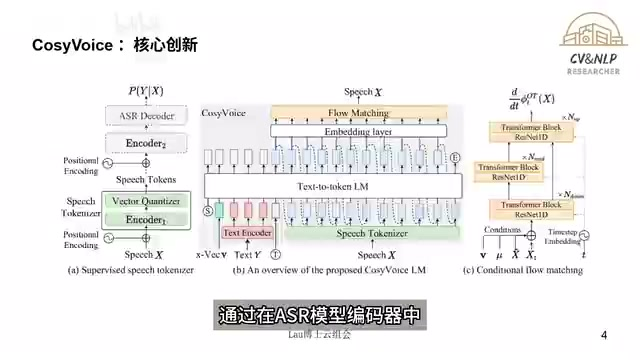
00:04:14–00:05:02 · 画面 057再通过条件流匹配模型将 tokens 转换为语音图 ECBB 这种双阶段架构无需传统 TTS 的音素时长预测模块，就像先写好带节奏的剧本，再按剧本演戏，流程更简洁。零样本克隆能力尤为实用，只需三秒参考语音就能提取 X-Vector 音色特征，让模型模仿任何人的声音。想象一下，输入家人的短语音就能让 AI 用家人的语气读故事，这就是 CosyVoice 的魅力
00:05:02–00:05:34 · 画面 058
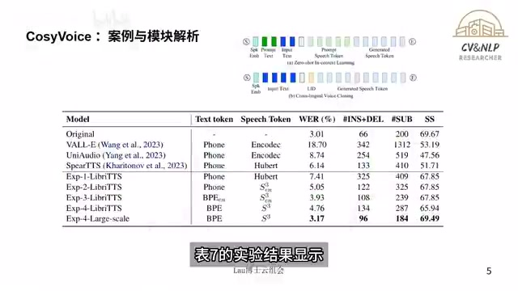
00:05:02–00:05:34 · 画面 058表期的实验结果显示,相比 VALL-E、UniAudio 等机械模型,CosyVoice 在内容一致性 WER 降低 50%以上和说话人相似度 SS 提升 15%上均有显著优势,这得益于五个模块的协同工作。S3 Tokenizer 确保语音准确,文本编码器实现跨模态对齐,LLM 负责序列生成,流匹配模型转换为语音,X-Vector 保证音色一致,这种分工让每个模块专注于一件事,整体性能更优。
看完 CosyVoice 2 的流式合成动画,我们来解析它的核心创新。
00:05:34–00:06:01 · 画面 059
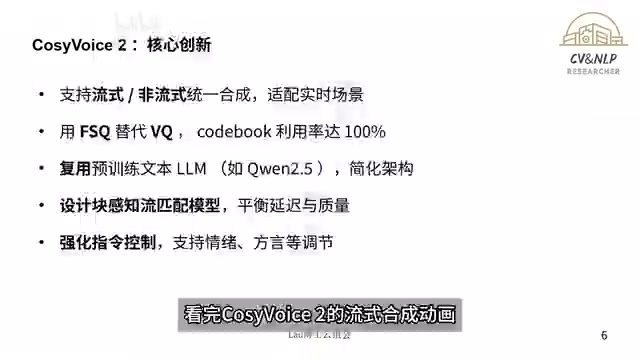
00:05:34–00:06:01 · 画面 059在引言部分,作者指出 CosyVoice 的局限性,只能等完整文本输入后再合成语音,不适合实时交互如智能音箱对话。例如,用户说明天天气怎么样,传统模型要等说完才能回应。体验卡顿,CosyVoice 2 的核心 idea 是实现流式合成,即便输入文本编生成语音,如图以 BC 所示,
00:06:01–00:06:26 · 画面 060
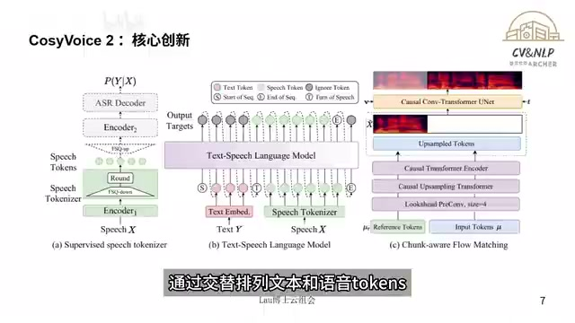
00:06:01–00:06:26 · 画面 060通过交替排列文本和语音 tokens，每 5 个文本 token 对应 15 个语音 token，让模型无需等待完整文本就能开始合成就像编打字编朗读。另一个关键改进是用 FSQ 替代 VQ 图移 etiquette2.2 节提到 FSQ 能让 codebook 全量利用，就像从只用到 23%的字典变为每个字都用上，语音细节更丰富。同时附用 Qwen2.5 等于训练 LLM 移除冗余模块。
00:06:26–00:06:47 · 画面 061
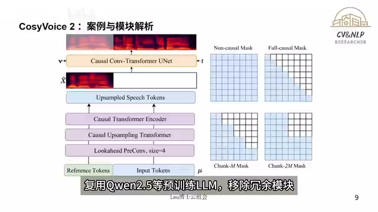
00:06:26–00:06:47 · 画面 061让模型更轻量高效块感知流匹配模型图三设计了四种掩码策略可根据需求选择实时对话用低延迟掩码小说朗读用高质量掩码灵活适配不同场景这些改进让 Cosy Voice 2 在表 5 的实验中 WER 降至 2.47%NMOS 达 3.96 均优于前作和其他开源模型
00:06:47–00:06:51 · 画面 062
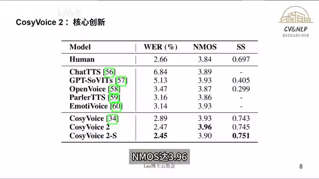
00:06:47–00:06:51 · 画面 06200:06:51–00:06:52 · 画面 063
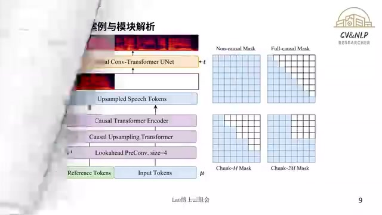
00:06:51–00:06:52 · 画面 063块感知流匹配模型的四种掩码策略，图三是平衡延迟与质量的关键。全因果掩码适合实时对话，最低延迟；非因果掩码适合离线合成，最高质量；块掩码则是中间选择。表 8 的消融实验显示，这种设计让流式合成的性能几乎无损，仅在复杂文本上有轻微下降
00:06:52–00:07:05 · 画面 064
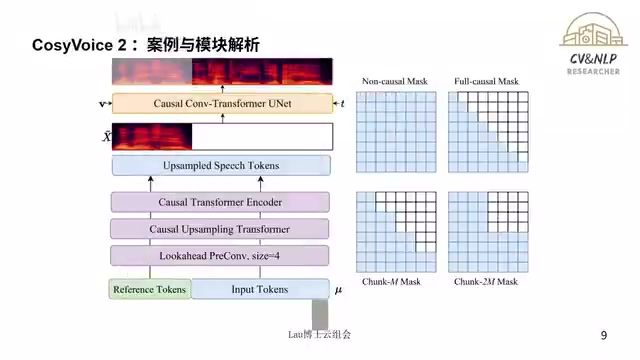
00:06:52–00:07:05 · 画面 06400:07:05–00:07:11 · 画面 065
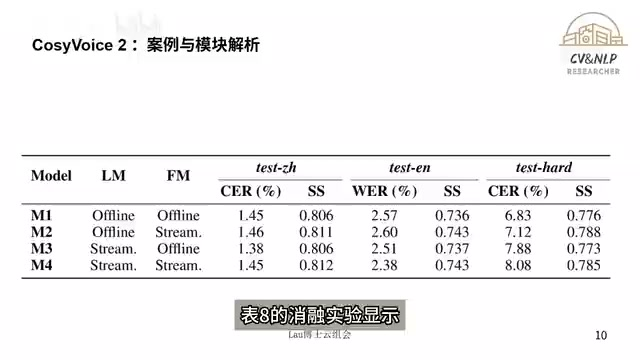
00:07:05–00:07:11 · 画面 06500:07:11–00:07:12 · 画面 066
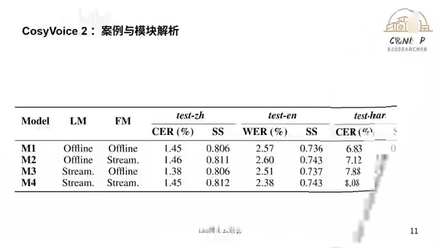
00:07:11–00:07:12 · 画面 066看完 Cosy Voice 三处理复杂文本的动画，我们来解析它的核心创新。在引言部分，作者指出前两代模型在真实场景中存在局限，难以处理方言混杂、网络热词和噪声环境。例如和成城都的火锅 YYDS 时，传统模型可能读错话音和 YYDS 在嘈杂环境中发音模糊
00:07:12–00:07:40 · 画面 067
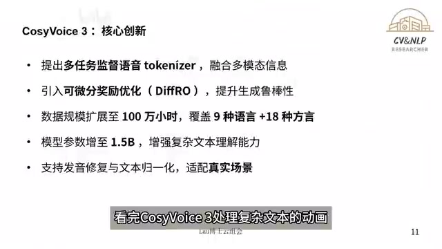
00:07:12–00:07:40 · 画面 067Cosy Voice 3 的核心 idea 是通过大规模数据与多任务学习让 TTS 模型适应野外场景如图二所示多任务监督 Tokenizer 在原有语义基础上融合了情绪识别 SER、语言识别 LID 等任务信息让 Tokens 不仅携带文字含义
00:07:40–00:07:41 · 画面 068
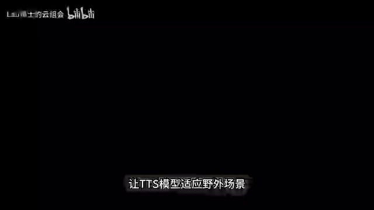
00:07:40–00:07:41 · 画面 06800:07:41–00:08:29 · 画面 069
00:07:41–00:08:29 · 画面 069还包含开心四川方言等风格特征，数据规模从 10 万小时扩展至 100 万小时表赛相当于让模型独变全球书籍见过更多罕见表达如 38 摄氏度 API 接口 1.5B 参数的 LLM 图亦增强了语义理解能力能正确处理中行 HNN 这类多音词可微分奖励优化 DiffRO 是另一突破 2.5 节通过 ASR 模型的识别结果作为反馈自动修正发音错误。
就像让模型自己听自己说的话并纠错在噪声环境中也能保持清晰这些改进让 Cosy Voice 三载表 4 的 SEED 测试中 Hard 集 CER 从 6.83%降至 5.09%实现真实场景的高质量合成
00:08:29–00:08:35 · 画面 070
00:08:29–00:08:35 · 画面 07000:08:35–00:08:36 · 画面 071
00:08:35–00:08:36 · 画面 071通过表格对比可见 Cosy Voice 系列的眼镜呈现三个清晰方向性能提升从 Cosy Voice 的 WER2.89%到 Cosy Voice3 的 1.45%内容一致性显著提升这得益于从监督 Tokens 到多任务 Tokens 的技术升级让语音语文本的对齐越来越精准
00:08:36–00:09:35 · 画面 072
00:08:36–00:09:35 · 画面 072场景扩展从仅支持非流式和城市和新闻播报，到 Cosy Voice 2 的流式非流式统一支持实时对话，再到 Cosy Voice 3 的真实场景适配支持方言噪声环境，逐步覆盖更多实用场景能力增强,数据规模从 16 万小时增至 100 万小时,语言支持从 4 种扩展到 9 种正式 8 种方言,模型参数从 0.5B 增至 1.5B,底线规模驱动性能的规律。特别值得注意的是量化方式的演进,VQ23%利用率到 FSQ,100%利用率再到增强 FSQ,逐步释放语音细节的表达能力,这是音质提升的关键。
Cosy Voice 系列三篇论文形成了完整的技术链
00:09:35–00:10:48 · 画面 073
00:09:35–00:10:48 · 画面 073首先Cosy Voice 通过监督语义 Tokens突破传统 TTS 的语义对齐瓶颈证明语义明确的 Tokens 是高智力合成的基础其次Cosy Voice 2 通过流逝架构与模型简化解决实时交互痛点让技术走向实用最后Cosy Voice 3 通过大规模数据与多任务学习提升模型在真实场景的鲁邦性实现从能合成到合成好的跨越从技术眼镜看团队始终围绕提升实用性展开从关注和成质量到兼顾实时性再到适配真实世界的复杂性这种问题驱动的研究思路值得学习未来方向可聚焦四个方面一是进一步降低流逝延迟至 100 毫秒以内
适配 AR 或 VR 等级制交互场景二是探索跨模态控制例如用图像辅助控制语音风格三是解决稀有方言的数据稀缺问题通过小样本学习适配更多语种四是扩展至歌唱合成目前三篇模型均不支持唱歌这是重要的拓展方向总体而言Cosy Voice 系列为 TTS 领域提供了与一对齐专制力动的完整范本其技术思路对其他生成式 AI 任务也有借鉴意义
00:10:48–00:10:49 · 画面 074
00:10:48–00:10:49 · 画面 074转写与来源说明 · 0 个自动复核提示
保留 145 个原始语音片段，0 个片段触发自动复核提示。提示仅用于定位可能的术语、重复或识别问题，不等于已确认错误。
讲解画面为源视频截图（640×360），不是可编辑 PPT 文件。全片按每秒 2 帧扫描内容变化，逐步展开页保留；连续动画保留代表画面。清晰度受源视频限制。
原视频：paper/合集_2026-10-16_论文精读/3秒复刻灵笼！CosyVoice三部曲深度解析【论文精读】.mp4
SHA-256：3d6910836b220ca971f29bfb1276782f2e4d9921a5a5c08a49fb94bdfffcbc90
全文按视频语音与画面制作。原论文可从上方链接下载；完整资料包保留全文、原始逐字稿、字幕和校对记录。